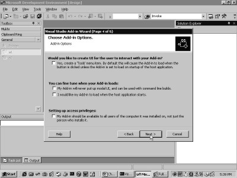

7.
Add-ins
This section of the book
appertains to extending Visual Studio.Net using Add-ins. The issue of what is
an Add-in and what we could do with it, is grist for another day. It should
suffice to say that the Add-in is the launch pad for any programmer who wishes
to extend Visual Studio.Net in myriad ways.
Everything about Visual
Studio.Net can be transformed or modified by the programmer. Visual Studio.Net
is bound to reign as the most extensible product in the world for a
considerable span of time. This product can be extended using the principles of
Automation.
The first step in this direction
leads to Add-ins, a point from where we shall initiate our exploration. Not all
of us are blessed with exceptional brilliance and grasp. Keeping this
deficiency in mind, we shall press forward one step at a time.
When the Visual Studio.Net
program starts normally, it displays the Start Page and the menu option of
Tools. Click on this menu option to arrive at screen 7.1.
|
|
|
|
Screen 7.1 |
Screen 7.2 |
Contingent upon how you
configure your copy of Visual Studio.Net, your output is bound to vary. In all
likelihood, you would not encounter a screen similar to ours. However, you shall
surely come across the menu option of Add-In Manager, which is to be clicked
on. This result of doing so is evidenced in screen 7.2.
An active project is required to
work with Add-ins. Therefore, a new project has been created ahead of time. To
reiterate, the basic format of the dialog box remains the same, although the
contents of your screen may appear disparate from ours. Our screen projects an
Add-in that has been installed previously.
In order to install another
Add-in, certain fundamental criteria need to be conformed to, so as to enable
the Visual Studio.Net framework to recognize it, and to thereafter keep track
of it. Any program running under
Windows, including Windows itself, maintains its state by storing data in a
hidden file called the registry. This file subsists on every hard disk of every
computer that has the Windows operating system installed on it.
This registry file has its own
unique format. Neither is it an XML file nor an ASCII file. The registry simply
stores name-value pairs in a specific format to facilitate quick and speedy
retrieval. There exists a set of .Net classes that permit us to read and write
to the registry. Furthermore, there is a program called Regedit, which allows
access to the data in the registry.
However, a file with a .reg
extension has to be created in order to enter data manually. The contents of
this file must necessarily be in name-value pairs. The program when executed
Regedit displays the registry data, as seen in screen 7.3.
|
|
|
Screen 7.3 |
The program window displays
queer names such as HKEY_CLASSES_ROOT,
HKEY_CURRENT_USER, etc. These names represent categories by means of
which, the name-value pairs can be systematically organized. This concept is akin
to having namespaces to organize C# classes. What remains a mystery is the
motive that impels names to begin with the word HKEY!
It is the registry that has
provided the foundation for Windows since its inception. HKEY_CLASSES_ROOT
simply serves as a category name or a key under which name-value pairs can be
stored. The same applies to the key HKEY_CURRENT_USER, which in turn, houses-in
some more keys within itself.
|
|
|
Screen 7.4 |
One of the keys is named as
Software. It has a plus sign, which when clicked on, unravels a large number of
keys from the Software category. The key named Microsoft contains a host of
other keys. Clicking on the plus sign brings forth the keys within it.
Visual Studio evinces two keys,
viz. 6.0 and 7.0. This amply fortifies the fact that internally, Visual
Studio.Net is recognized as Visual Studio 7.0. Clicking on the plus sign
exhibits a sub-key named Add-ins, which has no keys at all, as seen in screen
7.5. Now, add a name-value pair to this level.
|
|
|
Screen 7.5 |
a.reg
REGEDIT4
[HKEY_CURRENT_USER\Software\Microsoft\VisualStudio\7.0\AddIns\
aa.Connect]
"FriendlyName"="vijay"
"Description"="C#"
Enter the above contents in the
ASCII file named a.reg and store it in the folder c:\a2. Since we are seasoned
warhorses in the world of computers, we use the DOS box to execute the file
a.reg. This can be simply achieved by giving the command
C:\a2>a.reg {Enter}
If you have an aversion to the
DOS box, you could use the File Manager and simply double-click on the file
a.reg. A message box bobs up, as shown in screen 7.6. This eventuates since
Windows inherently believes that the reg file was clicked upon inadvertently.
|
|
|
|
Screen 7.6 |
Screen 7.7 |

Clicking on the Yes button
results in the execution of some activity internally, and finally, the message
box confirms successful registration, as depicted in screen 7.7.
Refresh the Regedit window. The
Add-ins key now shows a plus sign. Click on it to view the updated window, as
has been brought out in screen img193. The key that is added is aa.Connect,
which now holds two name-value pairs, as is apparent in the right window pane.
The names are Description and FriendlyName, having values vijay and C#,
respectively.
|
|
|
|
Screen 7.8 |
Screen 7.9 |
We now hark back to Visual
Studio.Net and click on the menu Tools, Add-in Manager. This projects the
Screen 7.9.
The window now displays the
freshly added Add-in called vijay, with the Description of C#. Thus, from the
perspective of the Add-in Manager, an Add-in is merely a registry entry.
Let us now fathom the inner
workings of the file a.reg. (If the Add-in is not visible, run the command regedit
a.reg). The Regedit program deems a reg file to be valid only if it starts with
the word REGEDIT4 in the first line. To substantiate this logic, delete this
line from the a.reg file. An error gets reported, as is evident in screen 7.10.
|
|
|
Screen 7.10 |
In the case of ASCII files, a
specific file format needs to be adhered to, in order to maintain the validity
of the file format. The Regedit program employs the word REGEDIT4 as an
identification tag for registry files. Blank lines are disregarded. Therefore,
no error is generated. What ensues is the name of the key enclosed within
square brackets. The full path name of the key under which the new entry is to
be added, is stipulated in the form of name-value pairs.
Thus, the reg file has the
starting key HKEY_CURRENT_USER, which culminates in aa.Connect. This results in
the Add-ins key acquiring a sub-key called aa.Connect. The name-value pairs are
stipulated below the name of the key. Here, the name appears first, i.e.
FriendlyName, followed by an 'equal to' sign, and finally, followed by the
actual value, i.e. vijay.
One of the major detriments here
is that there are a number of feckless rules. For instance, the name-value
pairs have to be specified within double inverted commas. However, even if this
rule is not complied with, no errors are reported. All the same, the name-value
pairs get overlooked by the Regedit program.
The name does not have to end
with Connect. But, since all the Add-ins have resorted to this word, we too
decided to follow suit, probably as a good luck charm. We now return to the
Add-in Manager in Visual Studio.Net. Here, the name of the Add-in is vijay.
This is because, the name FriendlyName in the registry, has a value of vijay,
while the value of the name Description is used as a help.
Thus, as far as the Add-in
Manager is concerned, an Add-in is merely a registry entry. The word aa.Connect
is called a ProgID. The ProgID bears considerable significance, which we shall
touch upon in a short while. Conclusively, all that the Add-in Manager does is,
to hunt for sub-keys, by looking under the key HKEY_CURRENT_USER \ Software \
Microsoft \ VisualStudio \ 7.0 \ AddIns. Currently, it ignores the name or the
ProgID of the keys, but it displays the FriendlyName of each one of them.
Select the Add-in vijay by
clicking on the checkbox, as is shown in screen 7.11, and then, click on the OK
button. An error gets reported as shown in screen 7.12, since the Add-in has
not been entered yet.
|
|
|
|
Screen 7.11 |
Screen 7.12 |
Here, we select the option of
No, because had we chosen the option of Yes, we would have had to run the reg
file a.reg yet again. Thus, here, we have merely been able to convince the
Add-in Manager that vijay is a valid Add-in. Let us now actually start writing
the Add-in.
|
|
|
Screen 7.13 |

An Add-in is nothing but a dll.
Therefore, a simple project is created, which results in a dll. This is
achieved by clicking on the menu-options
File, New, Project. Then, you need to choose Visual C# as the project
type and select Class Library Template as the Template. The project is named as
vij20.
using System;
namespace vij21
{
using System.Runtime.InteropServices;
[GuidAttribute("66ABBE67-F973-45E6-BD09-A18877323888"), ProgId("aa.Connect")]
public class zzz
{
}
}
The class library template
builds a dll, which could have also been created manually with effortless ease.
Replace the existing code with the code displayed above.
As usual, the program commences
with the namespace, since Microsoft insists on having the entire code enclosed
within a namespace. The namespace is called vij21. There is no co-relation
between the name of the dll and that of the namespace. Therefore, we have opted
for different names for the dll and the namespace.
A simple class called zzz is
placed in the namespace. It is prefaced with an attribute called GuidAttribute,
which belongs to the namespace System.Runtime.InteropServices. The attribute is
assigned two parameters; a 16 byte number and a name or a ProgID, viz.
aa.Connect. This introduces a link with the a.reg file, where the ProgID is
again named as aa.Connect. Thus, to register an Add-in, we merely have to
specify the ProgID as aa.Connect.
Eons ago, Microsoft introduced a
concept called Activex/OLE/COM. Although this is not the most opportune time to
delve into the details of COM, it suffices to say that a COM object is
identified by a 16 byte or 128 bit number, which distinguishes it from all the
other existing COM objects. A 16 byte number is unique across time and space,
since it is truly colossal in size.
The class zzz is assigned a
unique number by placing the GuidAttribute in front of it. This number is also
known as a GUID or a UUID. The acronyms GUID and UUID stand for 'Globally
Unique Identifier' and 'Universally
Unique Identifier', respectively.
There are programs available
with Windows, which can generate a GUID of this ilk. However, we have chosen a
number at random. There is a project template that creates an Add-in, which in
turn generates these GUIDs mechanically. The format for writing a GUID is also
predetermined.
Thus, so far, the class zzz has
been assigned a unique 16 byte number, in order that it may be able to
interoperate with COM. The ensuing step is to add some registry entries, so
that class zzz gets registered as a COM class.
The class zzz has been tagged
with the ProgID of aa.Connect and assigned a GUID. The Add-in Manager scans the
registry for a ProgID called aa.Connect. Then, it scouts for the assembly/dll
vij20.dll, which contains the class zzz. We are truly clueless about the
precise registry entries that are required to be added to the registry for COM
interoperability.
Click on the project name vij20
in the Solution Explorer with the right mouse button, as demonstrated in screen
7.14. (If the Solution Explorer is not active, choose the menu option View,
followed by the Solution Explorer.)
|
|
|
|
Screen 7.14 |
Screen 7.15 |
In the menu, select the last
option of properties to arrive at the screen 7.15.
Here, the name of the dll is
denoted as vij20 along with several other details. The options that are of
interest are located within the item Configuration Properties. When you double
click on it, the options that show up are displayed in screen 7.16.
|
|
|
Screen 7.16 |
The option that we are in quest
of, viz. 'Register for COM interop', exposes itself. The default value is
False. Click on the drop-down list and set the value to True.
Now, build the project by
pressing the key combination of Ctrl-Shift-B. A few extra lines get added in
the Build window, which postulate that a program is being executed in order to
add some registry entries.
|
|
|
Screen 7.17 |
After having registered the
class zzz as a COM object, close Visual Studio.Net and restart it. The
application must be closed and reloaded since the Add-in and the active project
happen to be one and the same entity. Also, if the dll is created without
reloading the application, multiple errors materialise.
Now, click on Tools, Add-in
Manager and select the Add-in called vijay.
Click on the OK button. The screen 7.18 clearly brings to view a
different error that has been generated by the Add-in Manager.
|
|
|
Screen 7.18 |
The class zzz has been derived
from an object, whereas it should have actually been derived from an interface.
Hence, the error is generated.
namespace vij21
{
using System.Runtime.InteropServices;
using Extensibility;
[GuidAttribute("66ABBE67-F973-45E6-BD09-A18877323888"), ProgId("aa.Connect")]
public class zzz : Extensibility.IDTExtensibility2
{
}
}
Add two more lines to the above
program. Firstly, include a namespace called Extensibility, and secondly,
derive the class zzz from the interface named IDTExtensibility2. When we attempt
to build the project, two errors emerge. The C# complier feigns ignorance about
the assembly containing the namespace Extensibility.
While using the C# complier, the
/R option has to be specified with the assembly name. However, in the Visual
Studio.Net framework, the reference has to be added by clicking the right mouse
button on the References item, as seen in screen 7.19. Thereafter, you need to
choose the Add Reference option. This brings us to screen 7.20.
|
|
|
|
Screen 7.19 |
Screen 7.20 |
The window that pops up
encapsulates a large number of namespaces. Scroll down the list and select the
one named extensibility. Double click on it to select it, as shown in screen
7.21. The namespace that is selected gets placed at the bottom. Finally, click
on the OK button and close the dialog box. The window undergoes a
transformation, as seen in screen 7.22.
|
|
|
|
Screen 7.21 |
Screen 7.22 |
The references item displays the
Extensibility namespace, which has been added recently. It also contains the
three namespaces of System, System.Xml and System.Data, which are already present
by default. Now, build the project.
An error was bound to occur. It
is because the interface IDTExtensibility2 encompasses five methods, whereas
the project has not implemented even a single one of these.
namespace vij21
{
using System.Runtime.InteropServices;
using Extensibility;
[GuidAttribute("66ABBE67-F973-45E6-BD09-A18877323888"), ProgId("aa.Connect")]
public class zzz : Extensibility.IDTExtensibility2
{
public void OnConnection(object application, Extensibility.ext_ConnectMode connectMode, object addInInst, ref System.Array custom){}
public void OnDisconnection(Extensibility.ext_DisconnectMode disconnectMode, ref System.Array custom){}
public void OnAddInsUpdate(ref System.Array custom){}
public void OnStartupComplete(ref System.Array custom){}
public void OnBeginShutdown(ref System.Array custom){}
}
}
Insert the above code in the
Code Painter to eliminate the errors. Then, select the Add-in named vijay from
the Add-in Manager dialog box. Nothing at all happens! Well, this indeed is a
good omen and calls for a celebration, since it means that everything has gone
off smoothly. It also goes to prove that the dll named vij20 has been
recognized as a full-fledged Add-in.
The next task is to identify the
particular functions that get called in the Add-in by the Add-in Manager, and
also, when exactly do they get called. For this purpose, a static function
named Show from the class MessageBox is utilized. This class is present in the
namespace of System.Windows.Forms. Hence, the assembly has to be added to the
Reference section.
As was done earlier, click the
right mouse button on the References item. Then, choose Add Reference, and
thereafter, scroll down to the end of the dialog box to select the option of
System.Windows.Forms. Then, double click on the namespace, as depicted in
screen 7.23; and finally, click on OK.
|
|
|
Screen 7.23 |
namespace vij21
{
using System.Runtime.InteropServices;
using Extensibility;
using System.Windows.Forms;
[GuidAttribute("66ABBE67-F973-45E6-BD09-A18877323888"), ProgId("aa.Connect")]
public class zzz : Extensibility.IDTExtensibility2
{
public zzz() {
MessageBox.Show("Constructor");
}
public void OnConnection(object application, Extensibility.ext_ConnectMode connectMode, object addInInst, ref System.Array custom)
{
MessageBox.Show("OnConnection");
}
public void OnDisconnection(Extensibility.ext_DisconnectMode disconnectMode, ref System.Array custom)
{
MessageBox.Show("OnDisconnection");
}
public void OnAddInsUpdate(ref System.Array custom)
{
MessageBox.Show("OnAddInsUpdate");
}
public void OnStartupComplete(ref System.Array custom)
{
MessageBox.Show("OnStartupComplete");
}
public void OnBeginShutdown(ref System.Array custom)
{
MessageBox.Show("OnBeginShutdown");
}
}
}
What should follow next is the
introduction of the constructor and the Show function in the six functions.
Now, whenever any of the functions gets called, the Message Box projects
itself.
Even though we are convinced
that you require no further reminders, we still reiterate that you should close
Visual Studio.Net, restart it and then, build the project. Now, select the
Add-in named vijay from the Add-in Manager, and click on the OK button. The
screen shows a message box, as is obvious from screen 7.24.
|
|
|
|
|
Screen 7.24 |
Screen 7.25 |
Screen 7.26 |
The Add-in Manager loads the
Add-in, and in the process, it beckons the constructor. Clicking on OK bespeaks
of the function OnConnection being called. This is followed by a call to the
function OnAddinsUpdate. These functions have been featured in screens 7.25 and
7.26.
When an Add-in is loaded, the
first function to be called is OnConnection. There are three plausible means by
which an Add-in can get loaded in Visual Studio.Net. The first method is by the
application of the Add-in Manager, as illustrated above. The second method
pertains to checking of the Startup checkbox in the Add-in Manager. The third method is by setting the value of the
Connect property of the Add-in to True.
Most Add-ins place the code for
initialization in the function OnConnection. The second function to be called is
OnAddInsUpdate. This function is summoned whenever a modification is effected
in the list of Add-ins in the Add-in Manager. This could occur whenever an
Add-in is either loaded or unloaded.
There are alternate means of
loading and unloading an Add-in besides resorting to the use of the Add-in
Manager. One such method includes the usage of a button on a toolbar named
Command.
There is a distinctive feature
of Add-ins that needs to be comprehended. If one more Add-in is loaded, the
function OnAddInsUpdate gets called for the newly loaded Add-in, as well as for
all other Add-ins that are already loaded.
When any Add-in is loaded or
unloaded, the function OnAddInsUpdate is called for all the Add-ins that are
already loaded. This is primarily done to apprise the Add-ins that a change has
occurred. Thus, the OnConnection method gets called only once, whereas the
OnAddInsUpdate function gets called on multiple occasions.
On closing Visual Studio.Net,
the function OnBeginShutdown gets called. This event gets called whenever
Visual Studio.Net begins to shutdown. Further, this function gets called only
if the Add-in is loaded in memory. Therefore, if some code needs to be called
when a running application is shut down, it can be placed in this function. One
such instance is when all activities that take place in a particular session
need to be logged to a file on disk.
This function may be summoned
more than once. To site an instance, it gets called when some program cancels
the event of calling the Add-in, and also when the application shuts down.
Thus, there is no guaranteeing the fact that the application would actually
close after this function gets executed.
The last function to be called
is OnDisconnection. This function is analogous to the OnConnection function.
This function can be called in three different events. It can be attributed to
the fact that an Add-in can be unloaded in three different ways.
The first is by un-checking the
checkbox in the Add-in Manager; the second is by closing Visual Studio.Net; and
the third is by resetting the Connect property of the Add-in object to False.
The OnConnection function has a companion in OnDisconnection.
When Visual Studio.Net is
restarted, it does not show any message box. You need to click on the menu Tools,
Add-in Manager, in order to get a better drift of the Event Model. Then, select
the checkbox of Startup for the Add-in vijay. Now, close and restart Visual
Studio.Net.
|
|
|
||
|
Screen 7.27 |
Screen 7.28 |
Screen 7.29 |
Screen 7.30 |
The Constructor gets called
first, as seen in screen 7.27; and then, the function OnConnection gets called,
followed by the function OnAddinsUpdate. Subsequently, Visual Studio.Net gets
loaded, and finally, OnStartupComplete gets called, as is evident from screen
7.30. This event is the last in the Add-in series and is an indication that the
application has completed executing its startup code.
The function OnStartupComplete,
which we discoursed about earlier, does not get called when the Add-in Manager
calls the Add-ins. It is because the function gets called only once, when the
Startup checkbox is checked. This function embodies code that gets executed
after the application has been loaded. You may uncheck the startup option to
validate its implications.
By now, we are sufficiently
informed about the precise occasions when, and the frequency with which these
functions get called from the class. Firmly grounded on this knowledge, we
shall now venture forth to explore the vitals of Visual Studio.Net.
To begin with, let us build the
same Add-in, but by employing a Wizard this time. Click on the menu File, New,
Project. In this instance, choose the Other Project option, and within this
option, select the Extensibility Project option. Then, select the Visual
Studio.Net Add-in option in the second pane and name it as vij25, as
demonstrated in screen 7.31.
|
|
|
Screen 7.31 |
Once the OK button has been
clicked upon, the Wizard screen emerges. The initial screen of the Wizard
should always be disregarded. So, click on the Next button.
Screen 7.32 represents the first
of six screens that constitute the Add-in Wizard. This screen determines the
programming language in which the code of the Add-in is to be written. Three
choices have been spread before us, viz. Visual C#, Visual Basic and Visual
C++. We are content with the default option of Visual C#. So, click on the Next
button to arrive at screen 7.33.
|
|
|
|
Screen 7.32 |
Screen 7.33 |
The Add-in can be loaded in two
applications, viz. the Visual Studio.Net IDE, which is the environment that we
are currently using; and in the IDE that is employed while writing macros. Both
applications are displayed as selected. Since this is acceptable to us, click
the Next button to arrive at screen 7.34.
|
|
 |
|
Screen 7.34 |
Screen 7.35 |
This screen poses the same two
questions that apply to the a.reg file. The first question is with regard to
the name of the Add-in, while the second question relates to the description.
Change the name of the Add-in to vij25 and click on the Next button to arrive
at screen 7.35.
A few more Add-in options can be
selected, as depicted in screen 7.35. We have taken a conscious decision not to
opt for any of them, since we are opposed to augmenting the code generated by
the Wizard.
When we click on the Next
button, we get transported to screen 7.36, where the requirement for an About
box is ascertained. Yet again, we reply in the negative for the same reasons
specified earlier and we click on the Next button.
|
|
|
|
Screen 7.36 |
Screen 7.37 |
The screen that now floats
before the eyes is the last screen of the Wizard, as seen in screen 7.37. This
is merely a summary of what has been selected so far. We have the option to
revert back and modify some of the options. Clicking on the Finish button darts
us back to the Visual Studio.Net IDE.
Now, build the solution, and
then, activate the Add-in Manager, as depicted in screen 7.38.
|
|
|
Screen 7.38 |
Here, it is amply evident that
the Add-in called vij25 has been added to the registry. Moreover, in the
project options, the COM interop option has been set to True.
Finally, let us size up the code
generated by the wizard, sans the comments.
Connect.cs
namespace vij25
{
using System;
using Microsoft.Office.Core;
using Extensibility;
using System.Runtime.InteropServices;
using EnvDTE;
[GuidAttribute("0B3AB622-23B2-490C-9023-779CB76C0786"), ProgId("vij25.Connect")]
public class Connect : Object, Extensibility.IDTExtensibility2
{
public Connect()
{
}
public void OnConnection(object application, Extensibility.ext_ConnectMode connectMode, object addInInst, ref System.Array custom)
{
applicationObject = (_DTE)application;
addInInstance = (AddIn)addInInst;
}
public void OnDisconnection(Extensibility.ext_DisconnectMode disconnectMode, ref System.Array custom)
{
}
public void OnAddInsUpdate(ref System.Array custom)
{
}
public void OnStartupComplete(ref System.Array custom)
{
}
public void OnBeginShutdown(ref System.Array custom)
{
}
private _DTE applicationObject;
private AddIn addInInstance;
}
}
Since the project was assigned
the name of vij25, the entire code is encompassed in a namespace with the same
name of vij25. There are five namespaces that get created. Further, six
references are added by the template that creates the project.
The GuidAttribute has a GUID,
which is generated by a well-defined algorithm located in the public domain. A
different GUID is generated each time a new Add-in Project is created. The
Wizard creates the ProgID by concatenating the name of the namespace and the
word Connect. The user never interacts directly with a ProgID.
As mentioned earlier, the word
ProgID is seemingly a good luck charm. Since the name of the class has been specified
as vij25, the Wizard adds the word Connect to it. Then, it derives the class
from the interface IDTExtensibility2, along with the Object. In any case, all
the classes are derived from Object.
The five functions that
constitute the interface are itemized, and two instance objects
applicationObject and addInInsatnce, of type _DTE and Add-in, respectively, are
defined. The final outcome is that the Add-in generated by the Wizard and the
previous Add-in bear a striking resemblance to each other. Now, it is for you
to make a choice between using the Wizard and doing the job manually.
If you heed our advice, we
recommend that you should first figure out exactly how the Wizard works. Once the
procedure is discerned, the process can be executed manually, since the Wizards
are time-consuming. You should bear in mind that the COM interop option first
un-registers the Add-in from the registry, and subsequently, registers it
again.
Finally, before we conclude this
chapter, let us pore over a simple Add-in, which creates a menu on being
loaded. Then, when the menu items are clicked, the Add-in displays a plain and
simple message box. To achieve this, load the project vij25 and modify the code
to the following:-
namespace vij25
{
using System;
using Microsoft.Office.Core;
using Extensibility;
using System.Runtime.InteropServices;
using EnvDTE;
using System.Windows.Forms;
[GuidAttribute("00271586-C6A9-44EF-A342-2E63FFD4D384"), ProgId("vij25.Connect")]
public class Connect : Object, Extensibility.IDTExtensibility2
{
DTE applicationObject;
public Connect()
{
MessageBox.Show("Connect");
}
public void OnConnection(object application, Extensibility.ext_ConnectMode connectMode, object addInInst, ref System.Array custom)
{
applicationObject = (DTE)application;
CommandBars cb;
cb = applicationObject.CommandBars;
CommandBar ct;
ct = cb["Tools"];
CommandBarControls cs;
cs = ct.Controls;
try
{
CommandBarControl c;
c = cs.Add(MsoControlType.msoControlButton, 1, null,1, false);
c.Visible = true;
c.Caption = "Vijay Mukhi1";
Events ev;
ev = applicationObject.Events;
CommandBarEvents e;
e = ev.get_CommandBarEvents(c);
e.Click += new _dispCommandBarControlEvents_ClickEventHandler(abc);
}
catch (System.Exception x)
{
MessageBox.Show(x.ToString());
}
}
public void abc(object c, ref bool h, ref bool ca)
{
MessageBox.Show("Hell");
}
public void OnDisconnection(Extensibility.ext_DisconnectMode disconnectMode, ref System.Array custom)
{
}
public void OnAddInsUpdate(ref System.Array custom)
{
}
public void OnStartupComplete(ref System.Array custom)
{
}
public void OnBeginShutdown(ref System.Array custom)
{
}
}
}
We get underway by defining an instance
variable called applicationObject, which is of type or class DTE. This class
could also be written as _DTE. The object name is specified as
applicationObject, because the wizard has taken a fancy to using such
long-drawn names. Hence, we have made an exception here.
The class DTE is derived only
from object, which is the 'mother of all classes' in the Visual Studio
Automation Object Model. All classes used in the Automation world are sourced
from the DTE class. It is the counter-part of the class object. DTE stands for
Development Tools Extensibility. It is an integral part of the namespace EnvDTE
and the code of this class resides in the file dte.olb.
All code that is required to be
called just once, is posited in the function OnConnection, even though the
function OnAddInsUpdate gets called after OnConnection. Placing such code in
the function OnAddInsUpdate could mean a spot of bother, since it gets called
on more than one occasion, when another Add-in is loaded.
The first parameter of OnConnection
is the most crucial one, since it is of type DTE and not of object. This
parameter application is stored in an instance variable called
applicationObject, although in this case, it is not mandatory to do so. The
rationale behind this is that the other four functions in the interface
IDTExtensibility2 are not passed this DTE object. Hence, by saving it in an
instance variable, the object is made accessible to the other functions too.
The use of the object
applicationObject could have easily been circumvented, but since the Microsoft
samples resort to this technique, we decided to follow in their footsteps.
This DTE parameter is of utmost
significance, since it allows us to access and modify the Visual Studio
environment. The property CommandBars is used to add a menu. This provides a
CommandBars object, which is stored in the variable cb. Then, using this
CommandBars object, the menus of the Visual Studio.Net can be accessed.
This object is part of the
Microsoft Office type library code, which is stored in the file mso.dll.
Therefore, Microsoft's heart is set upon using the code of Office 2000 in
Visual Studio.Net, thereby making the programmer adept at writing Office code
as well.
The CommandBars represents all
the commands or the menus in Visual Studio. However, we wish to gain access to
only the menu Tools. It is because all Add-ins by convention are required to
place their menu items under the Tools menu.
The indexer approach is used for
this purpose. The indexer is one of the most potent concepts introduced in C#,
which facilitates retrieval of the items in a collection. Thus, using the
indexer, the object ct of type CommandBar is extracted from the CommandBars
object cb. You may have noticed the extra 's'. The object ct becomes a handle to
the entire Tools menu. Based on the similar principle, any other menu may also
be accessed.
The CommandBar object ct that
represents the Tools menu has a property Controls. This property provides
access to the CommandBarControls object cs. Any object, whose name ends with
the letter 's', represents a collection.
Fresh menu items can be added to
the Tools menu by using the Add function. This function returns a handle to the
recently added menu item in the Tools menu, which is then saved in a
CommandBarControl object. Thus, a CommandBarControls object is fabricated out
of CommandBarControl objects. The CommandBarControl object can be one of the 23
available types.
The Windows XP Developer's Guide
provides more details on the same. All Office applications under Windows employ
the same underlying technology for creating menus and toolbars.
The Command Bars Object model
has been created to utilize the knowledge acquired from one Office application
in all other applications. This signifies astuteness or good judgment, since
menus and toolbars are splitting images of each other in all the Office
applications.
There are a total of three types
of CommandBar objects that we need to focus upon, viz. toolbars, menus and
pop-up menus.
The first parameter to the Add
function is an enum named MsoControlType. It may possess the following values
for the different types of entities to be placed within a menu item: button
msoControlButton, textbox msoControlEdit, drop-down listbox msoControlDropdown,
combo box msoControlComboBox or pop-up menu msoControlPopup.
For the current application, the
various parameters are as follows:-
The first parameter is an option of type Button.
The second parameter is the object, which is set to the number 1.
The third parameter may be passed on to the menu.
The fourth parameter is the object before which this menu item is to show up. Changing this value will push the menu item down in the list of menu items.
The value of the fifth and the last parameter determines whether the object is temporary or otherwise.
Next, the menu item object c,
returned by the Add function, is manipulated by setting certain properties. The
value of the Visible property is set to True, even though it already has a
default value of True. The Caption property determines as to what should get
displayed in the menu item.
At this stage, you may pause and
build the above solution. Then, activate the solution in the Add-in Manager.
The Tools menu will bring forth a new menu item right at the top, containing
the words Vijay Mukhi1, as shown in screen 7.39. If no value has been specified
for the Caption property, then an empty menu item gets projected.
|
|
|
Screen 7.39 |
All this may appear to be
majestic, but the primary mission is yet to be accomplished. We endeavour to
execute some of our indigenous code when this menu item is clicked on.
The DTE object has a read-only
property called Events of type Events, which offers access to all the Events in
the Automation model. This Events object has been safely stashed away in the
variable ev.
Events is an interface derived
from Idispatch. Seasoned programmers would surely recall that it had formed a
part of the OLE/COM world. The Automation Model employs the Events interface as
the starting point for the Event Handling.
The Events class has a property
called CommandBarEvents. It accepts a property or a menu item object, or even
the CommandBarControl, which has been appended to the Tools menu. On occasions
aplenty, the properties refuse to accept parameters. However, if they do, the
get_ prefix is then used to call the property.
Thus, ev.get_CommandBarEvents( c
) is employed to call the Get accessor of the property CommandBarEvents from
the Events class, and to pass it a parameter named 'c'. This property provides
access to a CommandBarEvents object, which represents the event-handling for
the freshly added menu option.
Thus, by resorting to this
property, a CommandBarEvents object is obtained, which contains a Click event
for an event called Click. This event is set to the function abc using the
delegate called dispCommandBarControlEvents_ClickEventHandler.
Thus, whenever the menu option
Vijay Mukhi1 is clicked on, the function abc gets called, which simply displays
a Message Box, as brought forth in screen 7.40.
|
|
|
Screen 7.40 |
Three parameters are passed to
this function abc:-
The first parameter represents the CommandBar object.
The second parameter signifies whether the click event has been taken care of or not.
Finally, the third parameter determines whether the built-in command should be invoked or not.
In this case, there is no
built-in command, since we have inserted this menu item. This is how we can add
a menu item to the existing menus and activate the code present in the Add-in.
The 'try and catch' clause could well have been omitted. However, we have
included it with the sole purpose of identifying the cause and the location of
an exception that may occur while writing code.
In the Add function, which is used
to add a new menu item, replace the enum value to msoControlComboBox for the
first parameter, as follows:-
c = cs.Add(MsoControlType.msoControlComboBox , 1, null,1, false);
This modification eventuates in
the display of a combo box along with the words Vijay Mukhi1, as seen in screen
7.41.
|
|
|
Screen 7.41 |
The Add-in can be loaded in
myriad ways. One possibility is to load it through the Add-in Manager, while
the other is to load it automatically at startup. To implement this, remove the
abc function from the above program and replace the OnConnection function as
follows:-
public void OnConnection(object application, ext_ConnectMode c, object addInInst, ref System.Array custom) {
MessageBox.Show(c.ToString());
}
As elucidated earlier, the first
parameter is the most crucial one, since it represents the DTE object. The
second parameter c represents an enum ext_ConnectMode, which dwells in the
namespace EnvDTE. The message box merely displays its value.
Now, build the solution. The
subsequent step is to select it in the Add-in Manager, and also to select the
checkbox that reads 'startup'. The message box that emerges has a constant
value of ext_cm_AfterStartup or 0, as seen in screen 7.42.
|
|
|
Screen 7.42 |
This value corroborates the fact
that the Add-in has been loaded only after Visual Studio.Net was started. This
could have been accomplished either by using the Add-in Manager or by setting
its Connect property to True.
Now, shutdown and restart Visual
Studio.Net. This time, the message box display that is returned by the Add
function, illustrates the constant ext_cm_Startup with the value of 1, as seen
in screen 7.43. This validates the fact that the Add-in was loaded at startup.
|
|
|
Screen 7.43 |
There are four more approaches
by means of which an Add-in can be loaded. The value ext_cm_External or 2
signifies that the Add-in was loaded by an external entity, which may have been
a program or a component. The value 3 or ext_cm_CommandLine indicates that the
Add-in was loaded by running Visual Studio, using the command line devenv. The
Fourth approach would be to utilize the services of an Add-in. At this point,
the enum name is ext_cm_Solution and the value is 4. The final possibility is
ext_cm_UISetup or 5, which is employed when the Add-in starts for the very
first time after installation.